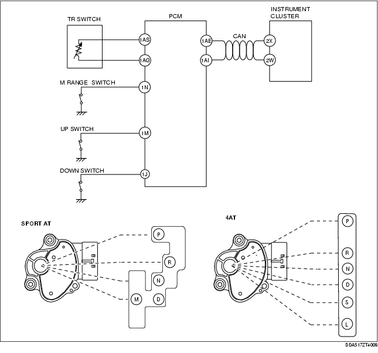

Transaxle range (TR) switch construction/operation [FN4A-EL]
• A variable resistor type switch has been adopted for the transaxle range switch.
• Because the transaxle range switch and the selector lever are connected by the selector cable, the transaxle range switch indicates a specified resistance according to selector lever operation and from this the PCM determines the selector lever position. The corresponding signal are sent from the PCM to other related parts.
